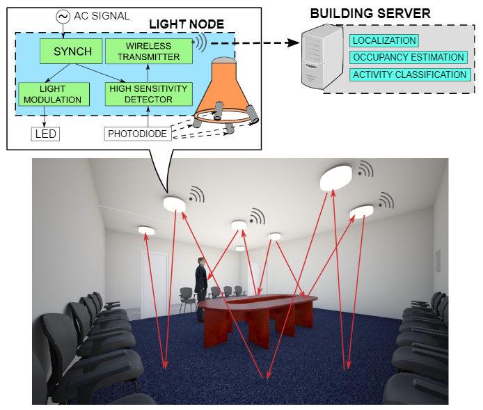

Bruxism is a jaw-muscle condition characterized by repetitive clenching or grinding of teeth
Existing methods of detecting jaw clenching towards diagnosing bruxism are either invasive or not very reliable
As a first step towards building a reliable, non-invasive and light weight bruxism detector, we propose an eSense based in-ear inertial jaw clenching detection technique that detects peaks/dips in gyroscope vector magnitude
We also present results from preliminary experiments that show an equal error rate of 1% when the person is stationary and 4% when moving
HandSense
Head-mounted devices (HMD) for Augmented Reality (AR) are gaining traction thanks to a growing number of applications in the areas of image guided therapy, computer aided design, cargo packing, manufacturing and digital field service
However, providing an always available, intuitive and user friendly input for these devices remains a challenging problem
This paper explores recognizing dynamic, micro finger gestures using capacitive coupling for interacting with a head-mounted device. Electrodes are attached to fingertips of users gloves and capacitive coupling among all pairs of electrodes is measured quickly to infer the real-time spatial relationship between fingers
The system is able to recognize fine, low-effort finger gestures, such as swiping, sliding, tap, double-tap. We evaluated our prototype with 14 gestures executed by 10 subjects and found a 97% accuracy of gesture recognition

EyeLight: Activity Sensing using Ceiling Photosensors
This project explores the feasibility of localizing and detecting activities of building occupants using visible light sensing across a mesh of light bulbs. Existing Visible Light activity sensing (VLS) techniques require either light sensors to be deployed on the floor or a person to carry a device
Our approach integrates photosensors with light bulbs and exploits the light reflected off the floor to achieve an entirely device-free and light source based system
This forms a mesh of virtual light barriers across networked lights to track shadows cast by occupants. The design employs a synchronization circuit that implements a time division signaling scheme to differentiate between light sources and a sensitive sensing circuit to detect small changes in weak reflections. Sensor readings are fed into indoor supervised tracking algorithms as well as occupancy and activity recognition classifiers
Our prototype uses modified off-the-shelf LED light bulbs and is installed in a typical office conference room. We evaluate the performance of our system in terms of localization, occupancy estimation and activity classification, and find a 0.89m median localization error as well as 93.7% and 93.78% occupancy and activity classification accuracy, respectively